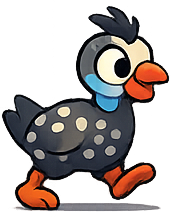
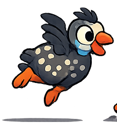

01
01
ENDLESS RUNNER
Tarentaal Dash
Spring en duik deur nege langer Suid-Afrikaanse roetes, elk omtrent 400 m, met 'n top-HUD, Krrr-Rush en voëls-alleen duikaksie.
⚡ V6.5🗺️ 9 × 400 m🐦 Voël-duik
Begin hardloop →
KRRR-KRRR! • TARENTAAL MINIGAME CENTRE
Tarentaal Dash is nou die fokus. Tussle en Fladder is tydelik geparkeer terwyl ons die endless runner behoorlik verfyn.
Gebruik Auto of dwing Phone/Laptop-modus vir beter uitleg.
01
ENDLESS RUNNER
Spring en duik deur nege langer Suid-Afrikaanse roetes, elk omtrent 400 m, met 'n top-HUD, Krrr-Rush en voëls-alleen duikaksie.

02ARENA SURVIVAL
Beweeg, skiet outomaties en bou 'n belaglike plaasarsenaal om tien golwe se chaos te oorleef.

03RITME VLUG
Flap deur windpompe en hooibale met nuwe vlerk-animasies, bestuur jou vlerkkrag en jaag 'n nuwe plaaslug-rekord.
VOLGENDE OP DIE PLAAS
'n Kaartgedrewe boerdery-avontuur met oeste, weer, markte en plaasbesluite.